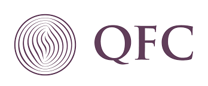

Experience
Qatar Financial Center
2008 - present
- Proactive in the avoidance of repetitive incidents through publishing “how to’s” and “tips” to users on a regular basis.
- Keeping client/user informed of progress during issue lifecycle and make follow-up calls or communications in a timely manner.
- Resolves client/users complaints within scope of authority; otherwise refers the matter to management.
- Notifies supervisor and/or Security of all unusual events, circumstances, missing items, or alleged theft
- Assist with the build, delivery and support of the desktop, mobile and infrastructure, Develop, test and maintain documented systems procedures/work instructions – train end users.
- Gathered customer and technology information to determine technical support level; elevate calls to appropriate support level as necessary.
- Provided first-level technical support to end-users on proprietary software and applications including installation basic usage and appropriate service level to warranty.
Qatar International Trading Company

2007 - 2008
- Oversees maintains and troubleshoots local area networks. Performs preventative maintenance in accordance with department policies
- Creates and maintains users, directory structures, security rights and printer configurations.
- Discusses software applications with users to determine level of satisfaction and/or the need to modify software. Maintains database of inventory of workstations and associated equipment; assists in research and purchase of hardware and software.
- Provides technical support to computer users identifies and repairs problems, monitors computer configurations, installs hardware and software. Develops user support documentation trains users on hardware and software application.
- Managed Active Directory and Exchange Server 2003 and Kerio Firewall.
- A day to day check-up of Systems for preventive maintenance measures.
Comercio SAIPEM Portugal Doha Office (Dolphin Project)
2005 - 2007
- Maintaining, troubleshooting, and repairing desktop computers, laptop/notebook computers, printers, peripheral hardware and software.
- Providing user support and problem resolution for desktop computers, network access, E-mail, Web, and server based applications.
- Testing and evaluating hardware and software to determine efficiency, reliability, and compatibility with existing systems.
- Procurement of hardware and software
- Operating, maintaining, and troubleshooting network server hardware, operating systems, and application software.
- Providing technical input to policies/procedures for installation, use, and maintenance of computers, networks, and peripherals.
- Configuring and installing operating systems, desktop applications, and network software.
- Developing computer operations policy and procedures.
- Operating, maintaining, and troubleshooting operating systems, and application software.
- Supports and remote user’s workstation for mobiles users.